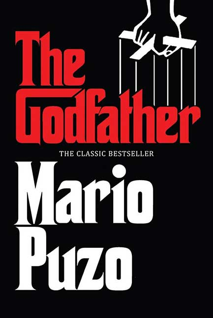

The Godfather - is a crime novel by American author Mario Puzo. Originally published in 1969 by G. P. Putnam's Sons, the novel details the story of a fictional Mafia family in New York City (and Long Island), headed by Vito Corleone, the Godfather. The novel covers the years 1945 to 1955 and includes the back story of Vito Corleone from early childhood to adulthood.
The Corleone family, one of the Five Families of the New York Mafia, fights the other four families in a brutal war in the years after World War II. After Don Vito Corleone is shot by men working for drug kingpin Virgil "The Turk" Sollozzo, Corleone's two sons, Santino (Sonny) and Michael, must run the family business with the help of consigliere Tom Hagen and the family's two trusted caporegimes, Peter Clemenza and Salvatore Tessio. When Michael murders Sollozzo and his bodyguard, corrupt NYPD Captain Mark McCluskey, while meeting with them in a restaurant, the conflict escalates into a full-scale war which results in Sonny's murder. Michael must return from hiding in Sicily to assume control of the family as the new Don. Under his retired father's tutelage, Michael orchestrates a plan to extract revenge, while relocating the Corleone family's power base to Las Vegas in order to further his goal of legitimizing the family and getting them out of organized crime. This encompasses the murder of all of the Corleone family's enemies, including Michael's brother-in-law Carlo Rizzi, who played a part in Sonny's murder. After selling all of the family's remaining businesses in New York, the Corleones permanently move to Las Vegas.
The Corleone family patriarch is Vito Corleone (the Don), whose surname represents the Sicilian town of his birth, Corleone. His birth name is Vittorio Andolini, but after immigrating to the United States following the deaths of his parents and brother, he changed it to the name of his home village as one of his few acts of sentimentality. Vito fathered four children: Sonny Corleone, Fredo Corleone, Michael Corleone, and Connie Corleone. He also has an informally adopted Irish son, Tom Hagen, who became the Corleone family's consigliere (counselor). Vito Corleone is also godfather to the famous singer and movie star Johnny Fontane. The godfather referred to in the title is Vito, but the story's main character becomes Michael. The novel's central storyline details Michael's destiny to succeed his father as the head of the family empire, despite his desire to lead an Americanized life with his girlfriend (and eventual wife) Kay Adams. The Corleone family is a criminal organization with national influence, notably protection, gambling and union racketeering. Serving as the Don's underboss is his oldest son, Sonny. The operational side of the organization is headed by two caporegimes, Peter Clemenza and Salvatore Tessio. Other significant members of the organization include Connie's abusive husband Carlo Rizzi and enforcers Luca Brasi and Al Neri.